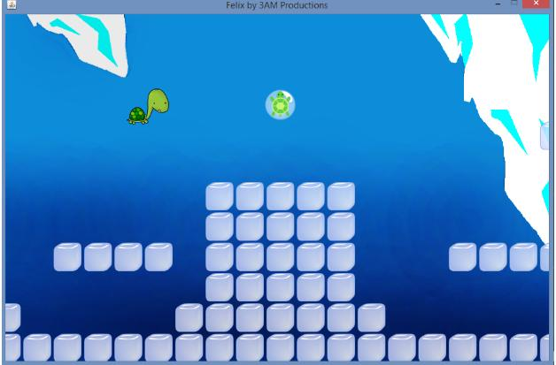

Gameplay
The gameplay within Felix is split up into two sections: the first being the word search which must be solved in order for you to enter a level. The second section involves you actually reaching a level, and while in there you must traverse the ocean looking for clues as to Felix's back story.

Felix on the hunt for a 'Clue' tile
Controls
Word Search:
Before you can go around getting high scores, you probably want to know how exactly you're supposed to play the game. The controls for the word search are fairly straight forward: you use your mouse and click to select cells. Likewise, you can click to unselect a cell. It's as simple as that.
Oceans:
Once you're in the oceans the controls become a little more complex, and it may take a little bit of time before you're used to them, so don't panic if you don't do well on your first run.
In order to move side to side you use the arrow keys on the keyboard. The 'right' arrow will move you right, and the 'left' arrow will move you left, pretty easy. Now, here is the confusing bit. At first you might be tempted to use the 'up' arrow key in order to swim, but instead of using it you will have to use the space bar. Trust us, this will make your gaming experience more comfortable and you will thank us later on.
As far as swimming is concerned, you are able to swim all throughout the map, think of it as having the ability to jump indefinitely on land. But with great power comes great responsibility. Just because you think you can swim over everything in sight it doesn't mean you should. We'll discuss this later on in the 'Hints and Tips' section.